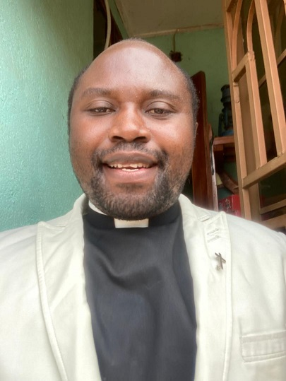

Aimer l'Eternel et Transmettre son Trésor aux Générations
Expression de notre Directeur

Cher/Chère Internaute
C'est avec un immense plaisir que nous vous accueillons en ligne sur cette page du Centre de Recherche et Actions pour la Promotion de l’Éducation Chrétienne,
CERAPEC en sigle.
Réussir dans l'éducation chrétienne, c'est réussir dans la mission.
Nous avons été touchés par les multiples défis de l'éducation chrétienne, visiblement rencontrés dans les familles,
les églises et les structures éducatives. Dieu s'est servi des multiples recommandations des responsables d'églises et d'institutions éducatives,
ainsi que de nos études, pour nous motiver à lancer le CERAPEC afin d'agir en synergie pour relever les défis auxquels l'Église,
les familles et la société sont confrontées en matière d'éducation chrétienne et ainsi disposer des outils-remèdes,
en vue d'un engagement solide et d'actions concrètes des différents responsables et acteurs pour une éducation chrétienne porteuse de résultats spirituels et sociaux auprès des enfants,
des jeunes et des adultes, ici à l'est de la République démocratique du Congo.
Par la grâce divine, et grâce à un soutien multiforme et à des prières pour des actions zélées, nous servirons un bon nombre de couches diverses
dans la Parole de Dieu et équiperons les dirigeants et les acteurs de l'éducation chrétienne dans les églises et les établissements d'enseignement.
Nous croyons avec William Carrey, le père des missions modernes (1761-1834), qu'il faut essayer de grandes choses pour Dieu afin d'espérer de grandes choses de lui.
Nous sommes convaincus que Dieu nous aidera à atteindre nos objectifs, car notre capacité vient de Lui seul (2 Corinthiens 3:5), et qu'Il nous permettra ainsi de contribuer à la revitalisation de l'éducation chrétienne aujourd'hui.
Merci de votre soutien,
Merci de votre partenariat!br
Kakule Mudeya David